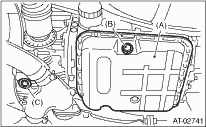

1. Lift the vehicle.
2. Drain the ATF completely.
CAUTION:
After running the engine or after idling for a long time, the ATF is hot. Be careful not to burn yourself.
3. Replace the gasket with new part, and then tighten the drain plug (ATF).
Tightening torque:
25 N·m (2.5 kgf-m, 18.1 ft-lb)

|
(A) |
Oil pan |
|
(B) |
Drain plug (ATF) |
|
(C) |
Differential gear oil drain plug |
4. Lower the vehicle.
5. Fill the ATF from the oil charge pipe.
Recommended ATF:

Capacity:
Fill with the same amount of ATF that was drained from drain plug hole.
Capacity when transmission is overhauled:
2.0 L non-turbo model
8.4 — 8.7 L (8.9 — 9.2 US qt, 7.4 — 7.7 Imp qt)
Models other than 2.0 L non-turbo:
9.3 — 9.6 L (9.8 — 10.1 US qt, 8.2 — 8.4 Imp qt)
6. Check the level and leaks of ATF.
7. Bleed the air of control valve.
8. Check the level and leaks of ATF.